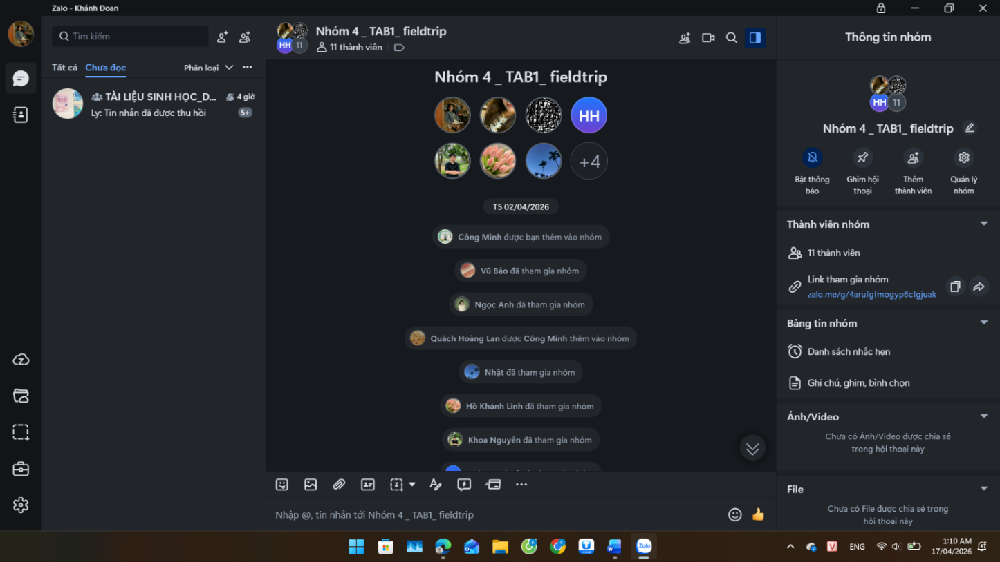
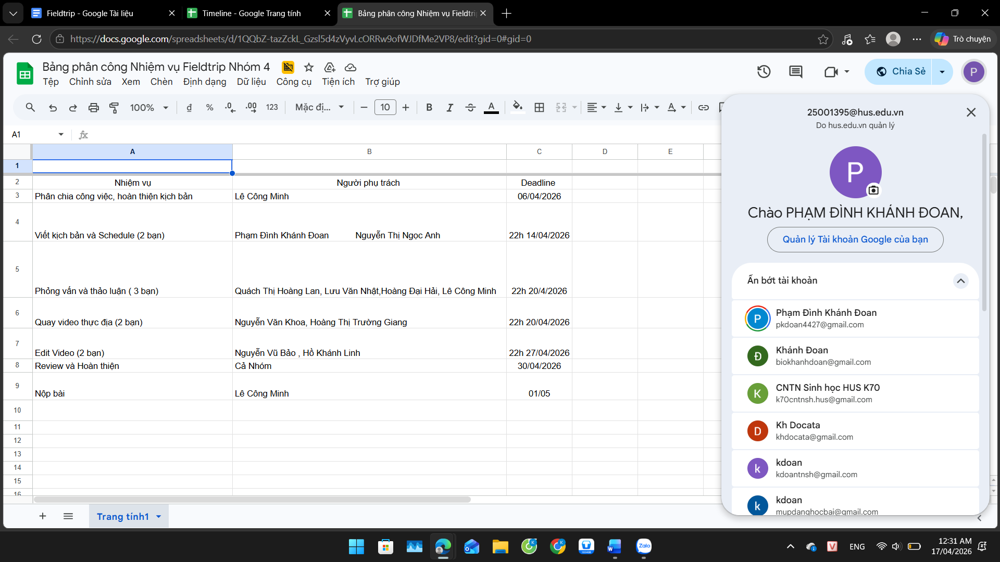
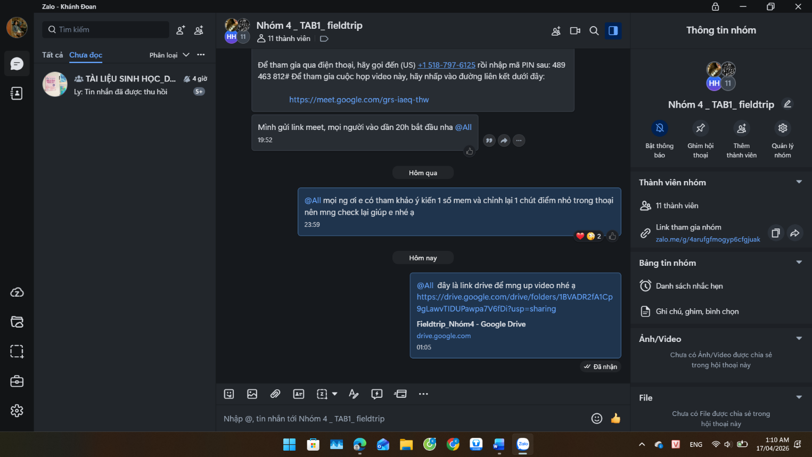
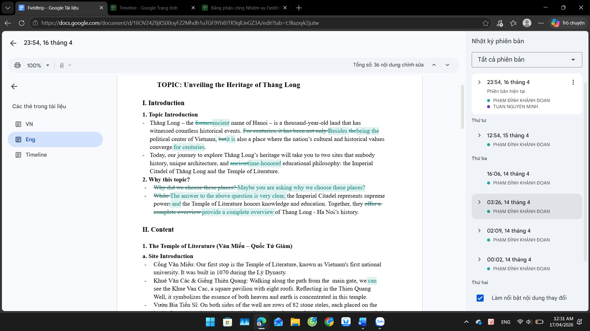
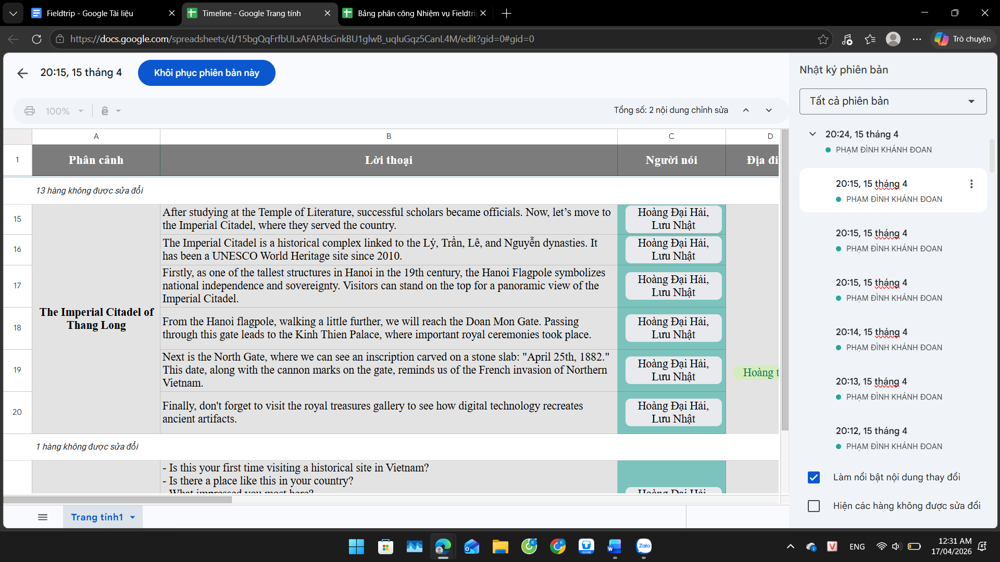
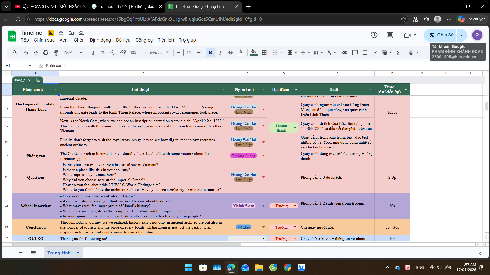
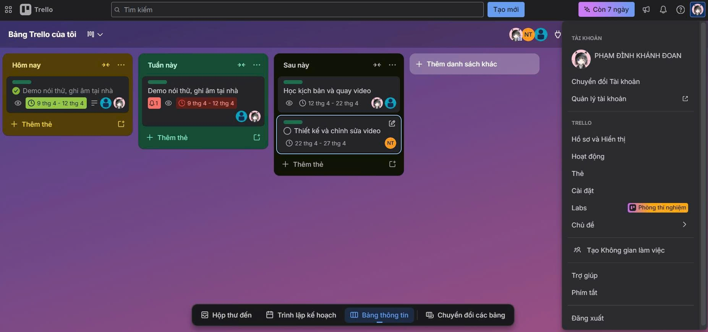
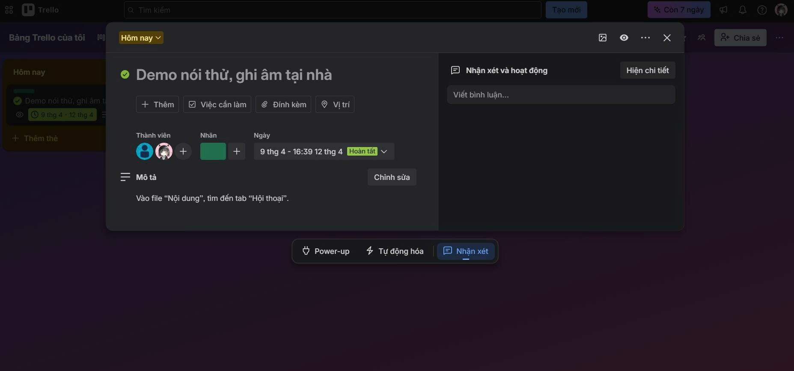
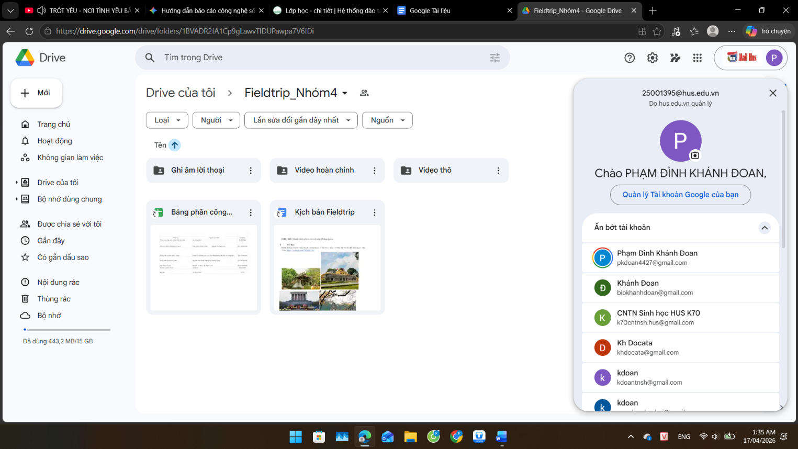
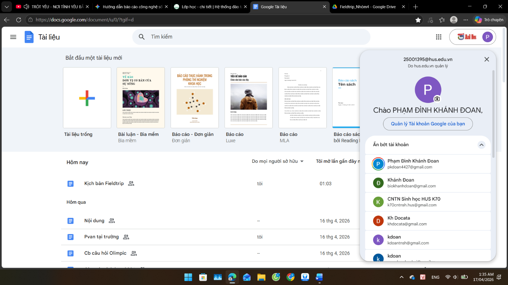

Sử dụng công cụ hợp tác trực tuyến cho dự án nhóm
Quản lý hiệu suất dự án nhóm bằng mô hình Kanban và phối hợp đồng bộ qua các nền tảng đám mây.
Mục tiêu bài học
- Làm quen với các công cụ quản lý dự án Agile hiện đại (Trello, Notion).
- Phân chia vai trò khoa học và cộng tác biên tập đồng bộ thời gian thực.
Tóm tắt thực hiện
Nhóm của tôi đã phối hợp lập tiến độ công việc trên bảng Kanban trực tuyến, chia nhỏ các nhiệm vụ nghiên cứu tài liệu và phân tích dữ liệu phòng lab.
BÁO CÁO
BÀI TẬP 3: SỬ DỤNG CÔNG CỤ HỢP TÁC TRỰC TUYẾN CHO DỰ ÁN NHÓM
Người thực hiện: Phạm Đình Khánh Đoan
Mã sinh viên: 25001395
I. Bối cảnh
- Chủ đề dự án nhóm: "Xây dựng Video tiếng Anh giới thiệu di sản văn hóa Thăng Long - Hà Nội".
- Vai trò cá nhân: Biên tập viên nội dung.
Tôi chịu trách nhiệm trực tiếp biên soạn kịch bản chi tiết cũng như lịch trình sản xuất trên các nền tảng số, sau đó phân công kịch bản cho các thành viên trong nhóm. Ngoài ra tôi cũng thực hiện một phần phỏng vấn nhỏ trong video sản phẩm.
- Mục tiêu: Hoàn thành video chất lượng cao trước ngày 02/05/2026.
II. Lựa chọn công cụ
Để tối ưu hóa hiệu suất làm việc từ xa, nhóm chúng tôi đã thiết lập hệ thống 4 nhóm công cụ:
1. Công cụ quản lý dự án:
- Tên công cụ: Trello.
- Tối ưu hóa: Thiết kế lịch, timeline cho một số thành viên cùng làm, sử dụng tag thành viên.
2. Công cụ soạn thảo tài liệu:
- Sử dụng công cụ Google Docs và Google Sheets, mở chế độ chỉnh sửa công khai để tất cả các thành viên trong nhóm có thể chỉnh sửa.
3. Công cụ lưu trữ và chia sẻ tệp:
- Sử dụng công cụ Google Drive để các thành viên trong nhóm có thể upload file, quản lý, xem trạng thái, tiến độ công việc của từng thành viên trong nhóm.
4. Công cụ giao tiếp nhóm:
- Sử dụng ứng dụng Zalo để giao tiếp giữa các thành viên trong nhóm, thông báo, gửi tài liệu, hình ảnh, âm thanh,…
III. Quá trình thực hiện nhiệm vụ cá nhân
- Lập nhóm zalo có đầy đủ các thành viên trong nhóm: Vào ngày 02/04/2026, tôi đã lập 01 group zalo tên “Nhóm 4_TAB1_fieldtrip” và thêm đủ 10 thành viên của nhóm vào group.

- Trưởng nhóm lập bảng phân công nhiệm vụ và tôi đã nhận công việc xây dựng kịch bản.

- Tham gia thảo luận cùng mọi người trong group Zalo.

- Thực hiện và hoàn thành công việc cá nhân (xây dựng kịch bản) đúng deadline ngày 14/04/2026. Sau đó thảo luận với các thành viên khác trong nhóm và có chỉnh sửa kịch bản vào ngày 15-16/04/2026.

- Tham gia cuộc họp Meet do trưởng nhóm tổ chức và tôi đã đảm nhiệm vai trò phân công kịch bản cho các thành viên trong nhóm vào ngày 15/04/2026.

- Tôi đã nhận 01 phần phỏng vấn trong timeline công việc.

- Sử dụng Trello để quản lý tiến độ công việc cá nhân.


- Tạo drive chung cho cả nhóm để các thành viên trong nhóm có thể upload file, quản lý, xem trạng thái, tiến độ công việc của từng thành viên trong nhóm.

- Sử dụng Google Docs để quản lý, lưu trữ các tệp tin cá nhân phụ trách: Do cá nhân phụ trách phần kịch bản.

IV. Phân tích hiệu quả của các công cụ
| Công cụ | Hiệu quả đối với cá nhân & n hóm | Tối ưu hóa |
|---|---|---|
| Trello | Giúp tôi không bao giờ quên việc "Demo nói thử ". Tránh việc chồng chéo nhiệm vụ giữa các thành viên . | Tôi sử dụng nhãn màu để ưu tiên các việc khẩn cấp , giúp nhóm tập trung vào mục tiêu ngắn hạn . |
| Google Docs & Google Sheets | Cho phép 10 thành viên cùng lúc theo dõi kịch bản . Tính năng "Comment" giúp tôi duyệt ý tưởng đề xuất sửa kịch bản của các bạn khác ngay lập tức . | Tận dụng "Version History" để theo dõi ai đã thay đổi kịch bản , tránh việc xóa nhầm dữ liệu quan trọng . |
| Google Drive | Lưu trữ video 4K dung lượng lớn mà Zalo không gửi được . Phân quyền " Chỉ xem " cho một số thành viên để bảo mật dữ liệu . | Thiết lập hệ thống thư mục 3 cấp ( Fieldtrip_Nhóm 4 Video gốc Video quay tại địa điểm 1) giúp tìm kiếm file dễ dàng . |
| Zalo | Phản hồi cực nhanh . Tính năng "Ghim tin nhắn " giúp các thông báo về lịch trình luôn hiển thị đầu nhóm . | Sử dụng tính năng " Nhắc hẹn " trên Zalo đồng bộ với lịch trên Trello để nhắc nhở các thành viên hay quên . |
V. Thách thức và cách giải quyết
- Thách thức 1: "Loãng" thông tin trên Zalo
- Vấn đề: Do nhóm thảo luận quá nhiều, các file kịch bản gửi trên Zalo thường bị trôi và bị quá hạn tải về.
- Giải quyết: Group Zalo chung chỉ dùng để thảo luận. Mọi file chính thức bắt buộc phải tải lên Google Drive và dán link vào phần "Mô tả" của thẻ Trello tương ứng.
- Thách thức 2: Xung đột khi chỉnh sửa kịch bản Tiếng Anh
- Vấn đề: Khi nhiều người cùng sửa kịch bản trên Google Docs, câu văn dễ bị rời rạc, mất tính thống nhất về văn phong.
- Giải quyết: Tôi đóng vai trò người chốt kịch bản cuối cùng. Sau khi các bạn đóng góp ý tưởng, tôi sẽ sử dụng tính năng "Suggesting mode" để chỉnh sửa lại toàn bộ mà vẫn giữ được ý tưởng hợp lý của các bạn, sau đó mới "Accept" để hoàn thiện bản cuối.
- Thách thức 3: Quản lý Deadline cho các nhiệm vụ sáng tạo
- Vấn đề: Việc "Demo nói thử" hay "Quay video" thường bị trễ do các yếu tố khách quan (thời tiết, tiếng ồn).
- Giải quyết: Đặt Soft Deadline trên Trello sớm hơn 2 ngày so với thời hạn thật để chủ động hoàn thành nhiệm vụ trước hạn.